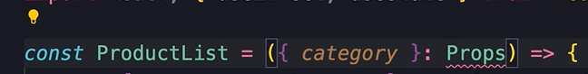

HOME
Effect Dependencies
So it has already been stressed that the useEffect runs a function
AFTER the component is rendered.
There are situations where we don't want this default behavior, and
want more control over WHEN this function gets executed.
Let's look at an example.
Example
Add a new component to the project...
In this component we define a state var for the products, and init it
to an empty arr...
Here we use the effect hook to call the server and fetch the products.
So we pass a function to the effect hook...
We refer to this as a callback function, because react is going to
call this function back.
In this function is where we would fetch to the server, but we don't
want to worry with that complexity for now.
Instead, just console.log something...
So, we fetch the products then update the products...
Now we have this err...
The reason we see this err is because we initialized our state const
to an empty array, so the Typescript compiler doesn't know what kind
of objects we want to store in this array.
Is it going to be strings, numbers, objects or what.
That's when we specify the type of this constant in angle brackets
here...
Test the example
Now go to the app component and add the ProductList...
If you go look at the console, you will see it having a fricken
seizure!!
It's stuck in an infinite loop!
So remove the list from the app for now.
The problem
So why is this happening?
Well, we know that the effect hook is triggered AFTER each render.
But we are updating the state in the effect hook, so that triggers a
re-render.
So we get this infinite chain of update state, re-render, update
state, re-render, update state, re-render.......
The solution to the problem
To solve this problem we should tell react to run this hook, only
once, the first time this component is rendered.
The effect hook has a second argument we can pass.
The second argument is optional.
We can pass the effect hook an array of dependencies
In this array we can pass one or more vars, that can be props or
state, and our effect will be dependant on these values.
💡 If any of those values change, react will re-render our effect.
But, if we pass an empty array that means our effect is not dependant
on any values, so it will be executed only once.
To see this in action head back to the app component and add the
ProductList back.
We don't have the errs anymore!
Do you remember why this component is rendered twice?
Recap on that
here
Back to the example
Now let's say we want a dropdown list for the user to select a
category of products and then show those products.
Add a select element with options in the App...
Now we need to keep track of the selected category in a state var, so
that when the state is changed our ProductList is re-rendered
So create a state for the category...
Then handle the onChange of the select element...
Next we can check to see if it's working.
So inspect with react dev tools...
Now when you select a different category, you see the change updated
in the state.
Now we need to pass the selected category as a prop to the ProductList
component.
Pass selected category as prop
So back in the ProductList component we should use an interface to
define the shape of props.
But, here we learn a shortcut!
We don't have to explicitly define an interface everytime we need a
prop.
So we're used to seeing code like this...

🤯 If we only have a single, or a max of 2 props, we can declare them
inline here!
Now we can say 'fetching products in', category
Now, back to the App we have to set the category to the selected
category...
If we test our app now, nothing happens. Why?
The reason this is happening is because of the empty array that we
passed as a dependency to the effect hook.
 We told react that this effect is not dependant on any values, so
react executed our effect only once.
We told react that this effect is not dependant on any values, so
react executed our effect only once.
To solve this bug in our application, we have to tell react that this
effect should be dependant on the category prop.
So anytime the category changes, react should re-execute this effect.
💡 For a more complex app, we could have multiple dependencys
You should now see the category you select printed to the console.
Recap
The second arg to the effect hook is the dependencies array.
NO SECOND ARG
If you do not supply the second arg, react will run the effect after
every single render of the component.
EMPTY ARRAY AS SECOND ARG
If we pass an empty array, react will execute our effect only once,
the FIRST time our component is rendered.
VALUES IN THE ARRAY
If you add one or more values to the array, which can be props or
state vars, react will run the effect anytime any of those values
change.